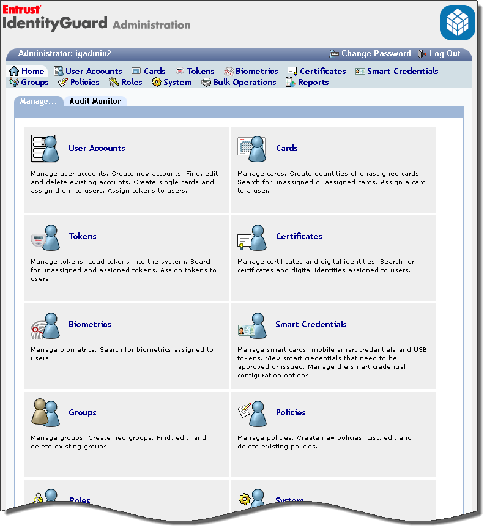
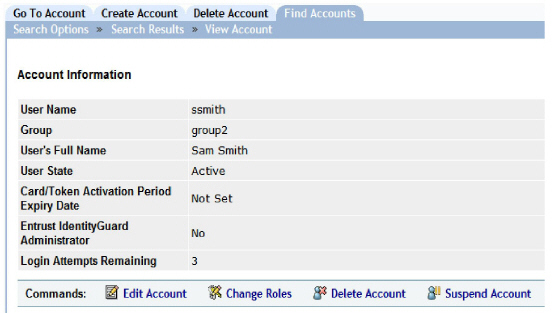

|
IdentityGuard Server 13.0 Administration Guide |
|
IdentityGuard Server 13.0 Administration Guide |
The following screen capture shows the Administration interface home page.

From the Manage tab on the home page, click any of the main option icons or their corresponding items on the menu bar. Each of these options displays a tabbed interface. The menu bar remains visible at all times.
Scroll down to the bottom of any Administration interface page to see the version number of your Entrust IdentityGuard installation.
If you have configured real-time audit monitoring, you also see an Audit Monitor tab. For more information about auditor monitoring, see View real-time audits in the Audit Monitor.
The following screen capture shows a tabbed interface. This example, part of the User Accounts pages, displays information about a user account retrieved from the Find Accounts tab. The navigation history appears in the tab’s display bar (in this case, Search Options > Search Results > View Account). Click any link in the navigation history to return to that step in the sequence of steps that has led to the current page.
